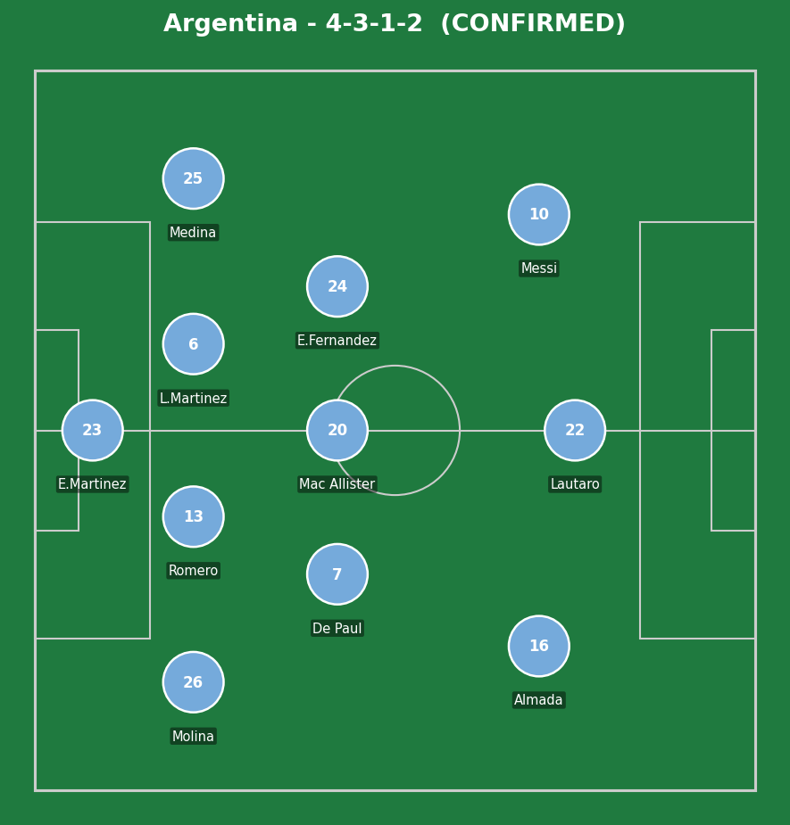
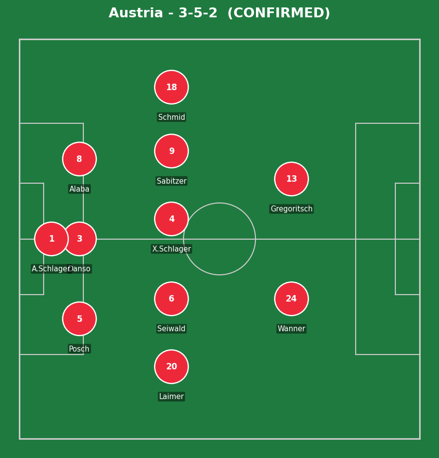
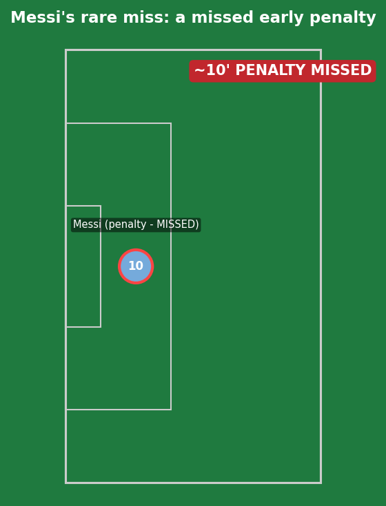
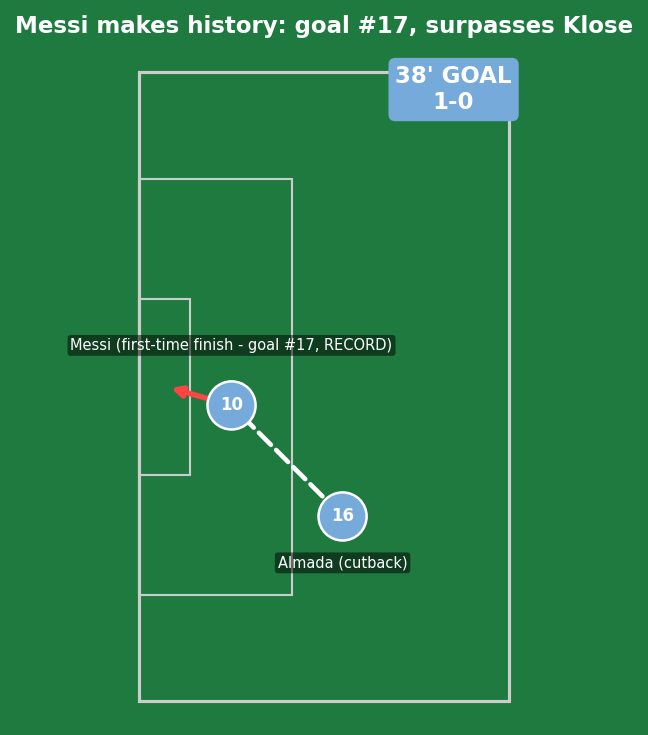
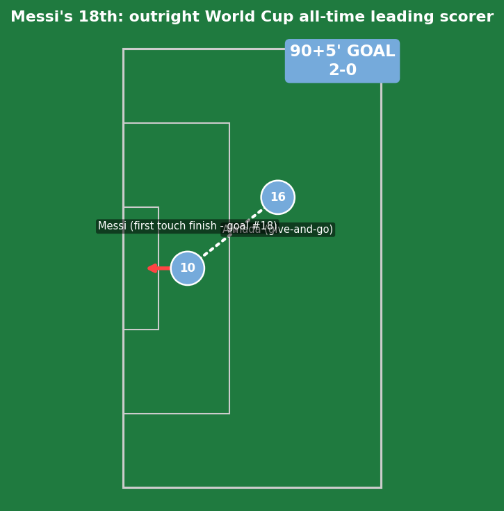
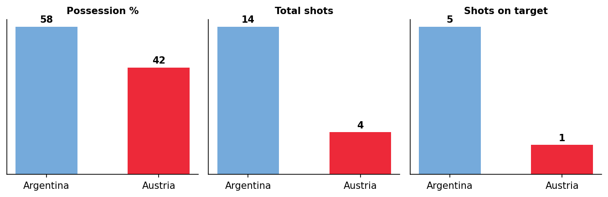
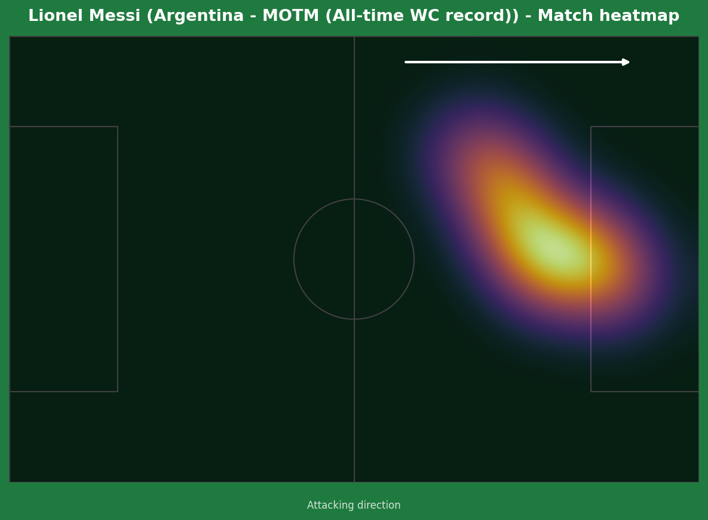
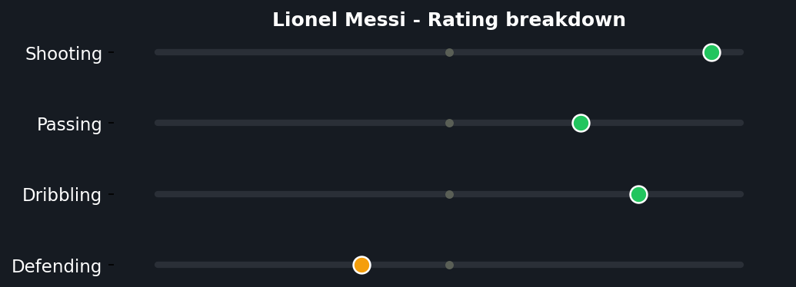
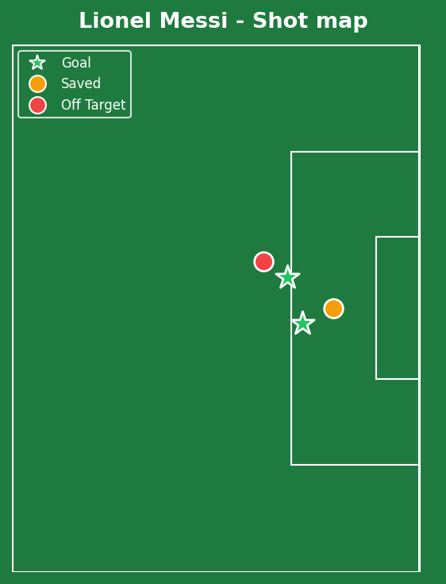

Argentina secured qualification to the Round of 32 with a hard-fought win over a well-organized Austria side, but the result is almost secondary to the history made. Messi missed an early penalty, then responded with the goal that took him level with and past Klose's all-time World Cup scoring record, before sealing the outright mark with a second deep into stoppage time. He now joins Just Fontaine and Jairzinho as just the third player ever to score in six consecutive World Cup matches.


Argentina (4-3-1-2): E. Martinez; Molina, Romero, L. Martinez, Medina; De Paul, Mac Allister, E. Fernandez; Almada; Lautaro, Messi. Austria (3-5-2): A. Schlager; Posch, Danso, Alaba; Laimer, Seiwald, X. Schlager, Sabitzer, Schmid; Wanner, Gregoritsch.
Austria's switch to a back three with Laimer and Schmid as wing-backs was a smart defensive setup that genuinely worked for long stretches - Austria controlled large portions of the game territorially and limited Argentina to just one shot on target across most of the first half. Kevin Danso in particular stepped up repeatedly to deny clear chances.
Argentina's issue was balance, not effort - without the early penalty going in, this had the makings of a genuinely frustrating night against a side defending in numbers. The difference, as it has been in seven of Argentina's last nine World Cup games, was one individual player conjuring something from very little.
The key tactical moment was less about either team's shape and entirely about Messi's individual response to the missed penalty - rather than letting the miss affect his game, he immediately created the space for Almada's cutback that led directly to the record-equaling goal just minutes later.

Worth covering honestly rather than glossing over - Lautaro Martinez was brought down in the box, VAR correctly upheld the penalty award, and Messi's spot-kick didn't find the net. Even legends miss penalties, and at 38 years old in his sixth World Cup, this is a fair, ordinary criticism: a genuinely missable big chance, missed. What matters more is what came next.

The response to the missed penalty was immediate and emphatic. Thiago Almada's cutback found Messi in space, and the first-time finish was struck with the kind of conviction that suggested the earlier miss was already forgotten. This goal took him to 17 World Cup goals - level with, then past, Miroslav Klose's longstanding all-time record. Twenty years almost to the day since his World Cup debut as a substitute, still rewriting the record books.

A give-and-go with Almada, finished first-time with characteristic composure under no real pressure of missing - goal number 18, making him the outright all-time leading World Cup goalscorer in the sport's history, surpassing every player who has ever taken the field at this tournament since 1930. At 38 years old, in what's been openly discussed as his final World Cup, doing this on the 40th anniversary of Maradona's most iconic Argentina moment is the kind of narrative symmetry that simply doesn't happen by accident in football this often - except, somehow, around this specific player.

A 14-4 shot count in Argentina's favor reflects control of the game's key moments, even if Austria's disciplined back three made the overall contest tighter than the eventual scoreline suggests.



A complete performance bookended by genuine fallibility and genuine greatness - the missed penalty is real, ordinary, human, and worth acknowledging plainly rather than excusing. But responding to that miss by becoming the outright greatest goalscorer in the 96-year history of this tournament, within the same match, against a defensively well-drilled opponent, is the kind of resilience that separates true legends from merely great players. Teammates said it best afterward: "he is a class above," "there isn't much to say." There genuinely isn't. This is the conversation now, full stop, and he's earned every word of it.
Illustrative reconstruction based on known event locations, not raw GPS tracking data.
Messi - 9.5 ⭐ MOTM (all-time record, missed pen)
Almada - 8.0 (assist on both goals)
E. Martinez - 7.0 (crucial save vs Sabitzer)
Romero - 6.5 (solid throughout)
Danso - 7.5 (multiple last-ditch defending)
A. Schlager - 6.0 (saved the penalty)
Sabitzer - 6.5 (100th cap, dangerous free-kick)
Alaba - 6.0 (organized the back three)
Next: Argentina face Algeria's group rival Jordan's conquerors with qualification already secured. Austria face Algeria needing a result to keep their own hopes alive.